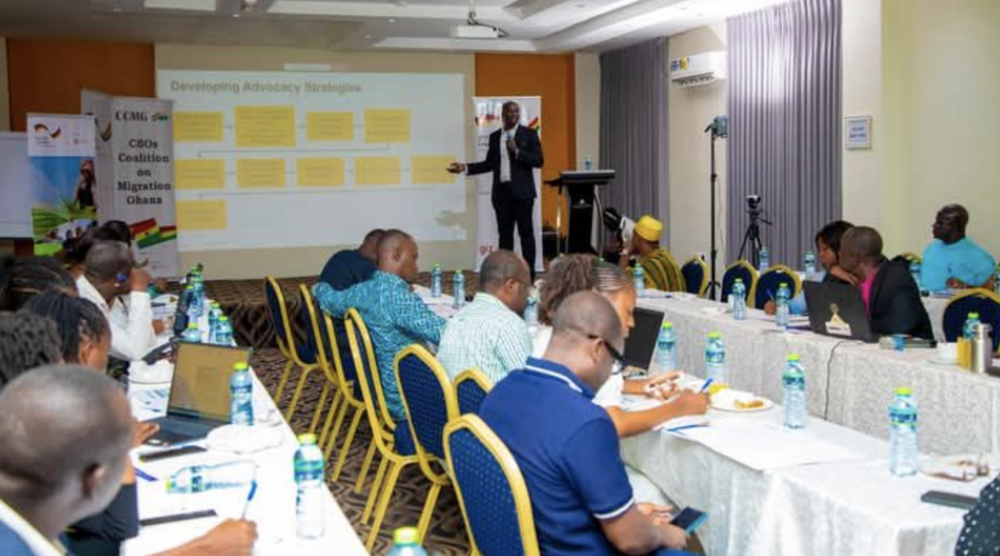
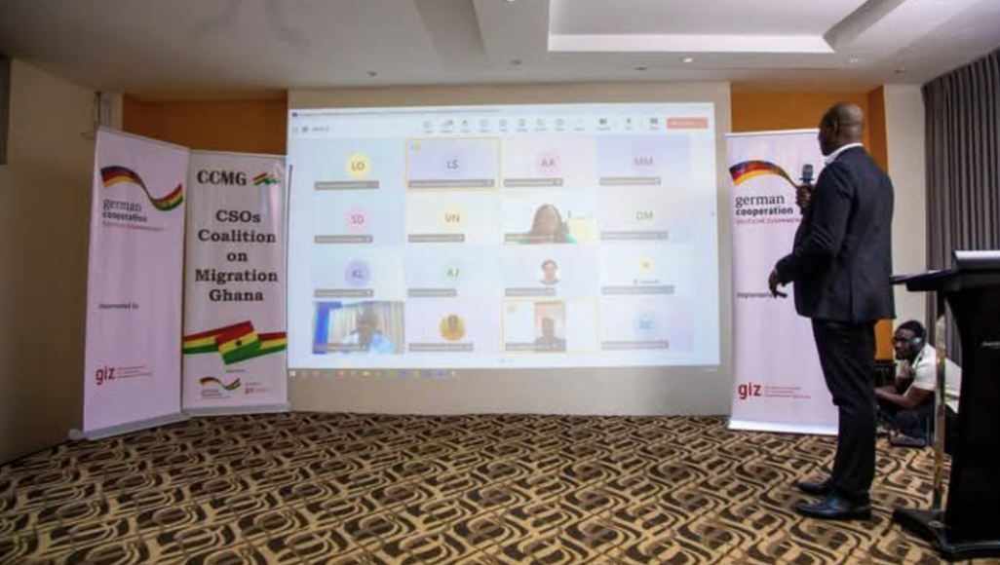

NIDO Europe
The Nigerians in Diaspora Organisation Europe is the European arm of a global Nigerian diaspora network, providing an umbrella for all Nigerians in Europe. Contact NIDO on all their social handles.

Information
Focus project
The Coalition of CSOs on Migration in Ghana (CCMG), with the Coalition of CSOs on Migration in Africa (CCMA), is advancing an advocacy project to promote ratification and implementation of the African Union Free Movement Protocol (AUFMP) across 11 African Member States, with Professor Leander Kandilige of the Centre for Migration Studies, University of Ghana, as a resource person.
A two-day hybrid session equipped 70 CSO representatives from 11 countries (including Ghana, Nigeria, Kenya, Malawi and South Africa) with advocacy and lobbying skills to engage policymakers and push for ratification.


CCMG brought together Ghana's Ministry of the Interior, the African Union, GIZ Ghana and ICMPD, with the ECOWAS Commission, IOM Ghana and other state institutions in attendance.


A film screening and policy dialogue on free movement, labour mobility and African economic integration.


Stay safe
All migrants have certain basic international human rights:
Need help now? See the helpline numbers.
Myth vs. fact
Common beliefs about migrants, and what the evidence says.
Skilled immigrants and migrant enterprises create jobs for locals. When immigrants take entry-level jobs, native-born workers move up into better ones.
“Using migration as a scapegoat for unemployment is largely unfounded.” (Fargues, 2014: 6)
Most migration involves back-and-forth movement. Restrictions can lead to more migration when that movement is disrupted (known as anticipatory surges), and they indirectly push unauthorised migrants into the hands of smugglers and traffickers.
“Politicians that talk extremely tough about securing the border actually don't do anything to prevent undocumented migrants from working.”
Migrants often contribute more to public funds than they draw. Undocumented migrants rarely access public services for fear of deportation. For example, the net fiscal balance of overall immigration to the UK between 2001 and 2011 was about £25 billion.
“The vast majority of migrants are industrious, courageous, and determined. They don't want a free ride. They want a fair opportunity.” (Kofi Annan, 2004)
Migrants are on average better educated and more skilled than those who stay at home. In several countries immigrants report that their skills are underused, a loss of economic opportunity for everyone.
“If well managed, intra-regional migration can contribute to positive socio-economic transformations, strong remittance flows, skills transfers, the promotion of trade, and cultural diversity.” (Prof. Joseph Teye, University of Ghana)
Migrants connect
There are migrant organisations in almost every country where you can meet people from your country of origin.
The Nigerians in Diaspora Organisation Europe is the European arm of a global Nigerian diaspora network, providing an umbrella for all Nigerians in Europe. Contact NIDO on all their social handles.
If you are a Ghanaian migrant in the United Arab Emirates and need to contact the Ghanaian Embassy, call or email them.

Calendar
Photo: football gala, Nigeria vs. Liberia communities.